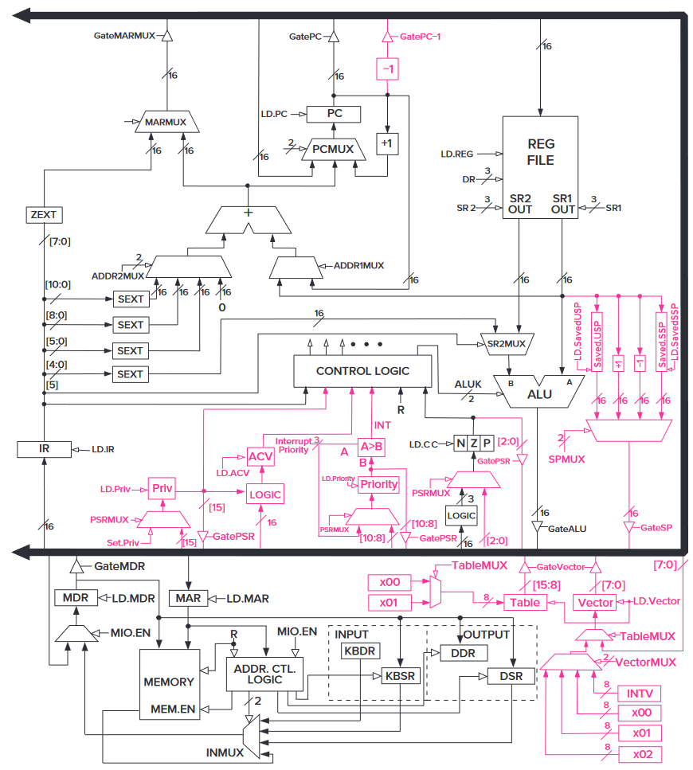

第 5 章：LC-3¶
LC-3 的 ISA¶
内存的组织 Memory Organization¶
LC-3 的内存中有 \(2^{16}\) 个 16 位的空间。或者说，内存空间是 \(2^{16}\)，写入能力（addressability）是 16。
对于它，我们认为一个字（word）长度就是 16 位。那么 LC-3 就是一个按字编址（word-addressable）的家伙了。
寄存器 Register¶
LC-3 里面有很多种寄存器，而我们常用的是那一些通用寄存器（general purpose register，GPR）。它一共有 8 个，名字叫 R0 到 R7，可以存储一个字（16 位）。
指令集和操作码 Instruction Set and Opcode¶
LC-3 的指令集是单周期的，长度也是一个字（16 位）。
留给 opcode 的位数只有 4，也就是说最多有 16 种指令（确切来说，有 15 种）。有什么影响？你等会就知道了。
寻址类型 Addressing Modes¶
LC-3 支持三种寻址类型：PC 相关（PC-relative）、间接寻址（indirect）和 Base+offset。
草，没有直接跳转的吗。那只能让汇编器它自己转义了。
状态码 Condition Codes¶
LC-3 有三个长度为 1 位的状态码，分别叫做 N、Z 和 P。
猜到了？就是记录刚刚那条指令的运算结果是不是负的（negative），是不是 0（zero），以及是不是正的（positive）。
LC-3 的指令¶
LC-3 的操作由两部分组成，opcode（类似于函数名）和 operands（类似于参数）。
因为 LC-3 是个 16 位机器，它的指令长度也都是 16 位的。
（写 LC-3 的汇编时，以数字前面加 # 来声明这是个十进制数，前面加 x 来声明是一个 16 进制数，前面加 b 来声明是一个二进制数。默认是十进制数。）
ADD¶
两个寄存器相加：ADD DR, SR1, SR2
- [15:12] ADD：0001
- [11:9] DR：存入的寄存器编号
- [8:6] SR1：参与运算的寄存器 1 编号
- [5] 标识符：0
- [4:3] 未使用：00
- [2:0] SR2：参与运算的寄存器 2 编号
一个寄存器和一个立即数相加：ADD DR, SR1, imm5
- [15:12] ADD：0001
- [11:9] DR：存入的寄存器编号
- [8:6] SR1：参与运算的寄存器 1 编号
- [5] 标识符：1
- [4:0] imm5：立即数
这个指令会根据运算结果改变状态码。
AND¶
两个寄存器取与：AND DR, SR1, SR2
- [15:12] AND：0101
- [11:9] DR：存入的寄存器编号
- [8:6] SR1：参与运算的寄存器 1 编号
- [5] 标识符：0
- [4:3] 未使用：00
- [2:0] SR2：参与运算的寄存器 2 编号
一个寄存器和一个立即数取与：AND DR, SR1, imm5
- [15:12] AND：0101
- [11:9] DR：存入的寄存器编号
- [8:6] SR1：参与运算的寄存器 1 编号
- [5] 标识符：1
- [4:0] imm5：立即数
这个指令会根据运算结果改变状态码。
NOT¶
把一个寄存器取反：NOT DR, SR
- [15:12] NOT：1001
- [11:9] DR：存入的寄存器编号
- [8:6] SR：参与运算的寄存器编号
- [5:0] 未使用：111111
这个指令会根据运算结果改变状态码。
LEA¶
把一个标号所在的地址扔给一个寄存器。
LEA DR, LABEL
- [15:12] LEA：1110
- [11:9] DR：存入的寄存器编号
- [8:0] PCoffset9：立即数
LD¶
LD 在这里是 load 的意思。
LD DR, LABEL
- [15:12] LD：0010
- [11:9] DR：存入的寄存器编号
- [8:0] PCoffset9：立即数
LD 使用的是 PC + offset 的寻址方式。即会去拿 PC（已经指向下一步的 PC）和立即数相加，然后得到的数当作内存下标去寻址。
这个指令会根据读取到的值改变状态码。
LDI¶
LDI SR, LABEL
- [15:12] LDI：1010
- [11:9] DR：存入的寄存器编号
- [8:0] PCoffset9：立即数
LDI 使用的是间接寻址的方式。
这个指令会根据读取到的值改变状态码。
LDR¶
LDR DR, BaseR, offset6
- [15:12] LDR：0110
- [11:9] DR：存入的寄存器编号
- [8:6] BaseR：拿来定位的寄存器编号
- [5:0] offset6：立即数
LDR 使用的是 Base + offset 的方式。
这个指令会根据读取到的值改变状态码。
ST¶
就是 Store，储存。
ST SR, LABEL
- [15:12] ST：0011
- [11:9] SR：要存入的寄存器编号
- [8:0] PCoffset9：立即数
ST 使用的是 PC+offset 的寻址方式。即会去拿 PC（已经指向下一步的 PC）和立即数相加，然后当作内存下标去把寄存器的值存下来。
STI¶
STI SR, LABEL
- [15:12] STI：1011
- [11:9] SR：要存入的寄存器编号
- [8:0] PCoffset9：立即数
STI 采用的是间接寻址的方式。
STR¶
LDR DR, BaseR, offset6
- [15:12] LDR：0111
- [11:9] SR：要存入的寄存器编号
- [8:6] BaseR：拿来定位的寄存器编号
- [5:0] offset6：立即数
STR 使用的是 Base + offset 的方式。
BR¶
就是 Branch。
BR / BRn / BRz / BRp / BRnz / BRnp / BRzp / BRnzp LABEL：
- [15:12] BR：0000
- [11] n：小于 0
- [10] z：等于 0
- [9] p：大于 0
- [8:0] PCoffset9：立即数
BR 也是无条件跳转。
JMP，RET¶
JMP BaseR
- [15:12] RET：1100
- [11:9] 未使用：000
- [8:6] 存储了要跳转的位置的寄存器编号：BaseR
- [5:0] 未使用：000000
RET 就是 JMP R7。
- [15:12] RET：1100
- [11:9] 未使用：000
- [8:6] 存储了要跳转的位置的寄存器编号：BaseR：111
- [5:0] 未使用：000000
JSR，JSRR¶
JSR LABEL：
- [15:12] JSR：0100
- [11] JSR 标志：1
- [10:0] PCoffset11
JSRR BaseR：
- [15:12] JSRR：0100（和 JSR 共用。靠下面那个值区分）
- [11] JSRR 标志：0
- [10:9] 未使用：00
- [8:6] 存储了要跳转的位置的寄存器编号：BaseR
- [5:0] 未使用：000000
TRAP¶
自陷指令，和中断差不多。
- [15:12] TRAP：1111
- [11:8] 未使用：0000
- [7:0] trapvect8：自陷向量
其中 trapvect8 = x25 是 HALT。
RTI¶
- [15:12] RTI：1000
- [11:0] 未使用：000000000000
栈上的头两个值会弹出，第一个给 PC，第二个给 PSR。
注意是在给 PSR 复制之前就把第二个给弹出了。
缺少的指令¶
没有乘法，没有减法……不会吧，连取反都没有？
别急，你可以发现连 OR 都没有！
所以说只能德摩根一下了……A OR B = NOT(NOT(A) AND NOT(B))……
减法就是加相反数……相反数就是按位取非加 1……真他妈的能省则省啊。
至于乘法除法，你还能怎么办呢……LC-3！你睡了吗！我-睡-不-着——！
LC-3 的数据通路¶

图：LC-3 的数据通路
全局总线 Global Bus¶
那条又粗又黑的线就是全局总线。这根总线里面有 16 根线，也就是说它可以让 LC-3 里面的两个结构之间传递最多 16 位的信息。
在同一时间点上，最多只能有一个值是在这里面传输的。为了确保这一点，“三态门”（上面的那张图上的小三角形）们控制着数据的流向。（“三态”中，两个状态是传输时的 0 和 1，一个是切断的时候。）
内存 Memory¶
它有一个 MAR 和一个 MDR，用来控制内存的读写。至于什么时候读写呢？有个信号叫 WE（write enable），当它出现的时候，就是内存要把 MAR 的位置的数据写进 MDR 的时候了。
ALU 和寄存器文件 ALU and the Register File¶
寄存器文件中有 8 个寄存器 R0 到 R7。它们这一坨在一次读取命令下来后可以一次给出最多两个数值，一个在 SR1 里面，一个在 SR2 里面。
ALU 接受两个输入（不算控制信号）。它的运算结果会写进一个寄存器中（丢不掉），同时它还会改变存在 LOGIC 里面的 NZP 三个状态码。
PC 和 PCMUX¶
PC 向 MAR 传递信息，找内存要指定地方的指令。而 PCMUX 决定了 PC 的值来自哪里。它有三个输入，一个来自总线，一个来自各种跳转计算出来的位置，一个来自 PC + 1。
MARMUX¶
它决定了 MAR 的值来自哪里，是 PC 还是某个寄存器。
LC-3 的指令周期¶
FETCH¶
PC 寄存器会把自己的值写进 MAR 里面，然后自己写进去自己的增量。
在下一个时钟周期时，内存把 MAR 的位置对应的值写进 MDR。
又过了一个时钟周期后，IR 寄存器从 MDR 里面拿值过来。
DECODE¶
在之后的那个时钟周期，IR 里面的内容会被翻译成一堆控制信号，针对 LC-3 的方方面面。
EVALUATE ADDRESS¶
如果要从内存中读取数据放到寄存器中，那么接下来就会计算地址，并且通过 MARMUX 把地址放到 MAR 里面。
OPERAND FETCH¶
指令说需要的数据会全部准备好。这可能需要等好几个时钟周期。
EXECUTE¶
执行指令所需要干的事情。
STORE RESULT¶
如果有结果的话，把结果放到正确的位置。